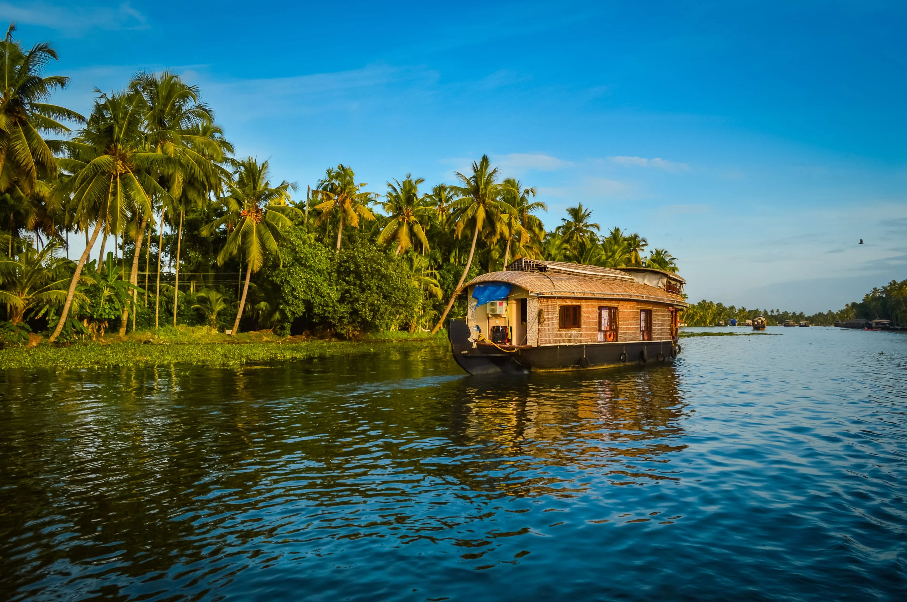

Explore Kerala
KASARGOD
Northernmost district of Kerala, Kasaragod is famous for its handlooms and its 293 kilometre long coastline. With its cultural uniqueness, the place is known as the land of Gods. Rich in history, Kasaragod is
home to the largest and best preserved fort in the State - Bekal.
read more
KANNUR
Kannur is dubbed as the City of Looms and Lores, thanks to the flourishing handloom industry and folk art called Theyyam. Theyyam is a ritualistic artform encompassing dance, music and mime, where the artist dons the guise of God. Kannur is believed
to have got its name from being the land of Kannan or Krishna.
read more

KOZHIKODE
Kozhikode is a coastal city in Kerala. It was a significant spice trade center and is close to Kappad Beach, where Portuguese explorer Vasco da Gama landed in 1498. The central Kozhikode Beach, overlooked by an old lighthouse, is a popular spot for watching the sunset.
Inland, tree-lined Mananchira Square, with its musical fountain, surrounds the massive Mananchira Tank, an artificial pond.
Endowed with lush green countrysides, serene beaches, historic sites, wildlife sanctuaries, rivers, and hills, this city enchants both its inhabitants and its guests. With its unique culture and friendly ambiance, Kozhikode is a wondrous destination for all.
read more

WAYANAD
Wayanad is a beautiful rural district in Kerala. In the east, the Wayanad Wildlife Sanctuary is a lush, forested region with areas of high altitude, home to animals including Asiatic elephants, tigers, leopards and egrets.
In the Ambukuthi Hills to the south, Edakkal Caves contain ancient petroglyphs, some dating back to the Neolithic age.
read more
MALAPPURAM
Malappuram is a city in Kerala,
Malappuram has made numerous contributions to the cultural heritage of Kerala. A famous centre for Hindu-Vedic learning and Islamic philosophy,
the temples and mosques of this region are well known for their spectacular festivals.
read more
PALAKKAD
Palakkad, or Palghat, is a city in Kerala. The 18th-century Palakkad Fort has sturdy battlements, a moat and a Hanuman temple on its grounds. North, on the Kalpathy River, the 15th-century Viswanatha Swamy Temple is the main venue of the famous Ratholsavam chariot festival.
Northeast, near Malampuzha Dam, the town of Malampuzha has a rock garden created from recycled materials.
read more
THRISSUR
Thrissur is known as the cultural capital of Kerala, and the land of Poorams. The district is known for its ancient temples, churches, and mosques. Thrissur Pooram is the most colourful temple festival in Kerala.
read more
ERNAKULAM
Ernakulam,also known as the commercial capital of Kerala, which is famous for its beautiful coastline,ancient Hindu temples, churches, synagogues and mosques.
The city also flaunts one of the finest natural harbours of the world and was the centre of the world spice trade for many centuries.
read more
IDUKKI
Idukki district is a densely forested, mountainous region of Kerala. In the north, Anamudi mountain towers over Eravikulam National Park, where the rare, blue Neelakurinji flower blooms every 12 years. Nearby, Munnar is a hill station known for its sprawling tea plantations and Tea Museum.
Farther south is the vast, curved Idukki Dam and Periyar National Park, a tiger and elephant reserve.
read more
KOTTAYAM
Kottayam is blessed with nature's bounty in abundance. It is the pride of God's own country with its beautiful churches, charming nearby hill stations, significant temples, and refreshing waterfalls.
The Western Ghats and the backwaters add to the beauty to this undisturbed, rustic town of Kerala.
read more

ALAPPUZHA
Alappuzha, famous for its boat races, beaches, marine products and coir industry, is a world renowned backwater tourist destination of India.
Kuttanad, Alappuzha backwaters and Alappuzha beach are the must-see tourist attractions in the district.
read more
PATHANAMTHITTA
Situated near the Western Ghats and bordered by the hills, Pathanamthitta district is a treat to eyes with its vast unending stretches of forests, rivers and rural landscapes.
Blessed by nature, the district is famous for its scenic beauty, fairs and festivals.
read more
KOLLAM
Kollam is known as a trade hub and for its beaches, like lively Kollam and secluded Thirumullavaram. Sardar Vallabhbhai Patel Police Museum has artifacts tracing the history of the police force. Nearby, Ashtamudi Lake is a gateway to the Kerala backwaters,
a network of waterways rich with vegetation. The striped 1902 Tangasseri Lighthouse has ocean views.
read more
THIRUVANANTHAPURAM
Thiruvananthapuram or Trivandrum is the capital of the southern Indian state of Kerala. It's distinguished by its British colonial architecture and many art galleries. It’s also home to Kuthira Malika (or Puthen Malika) Palace,
adorned with carved horses and displaying collections related to the Travancore royal family.The coastline also adds beauty to the capital city.
read more